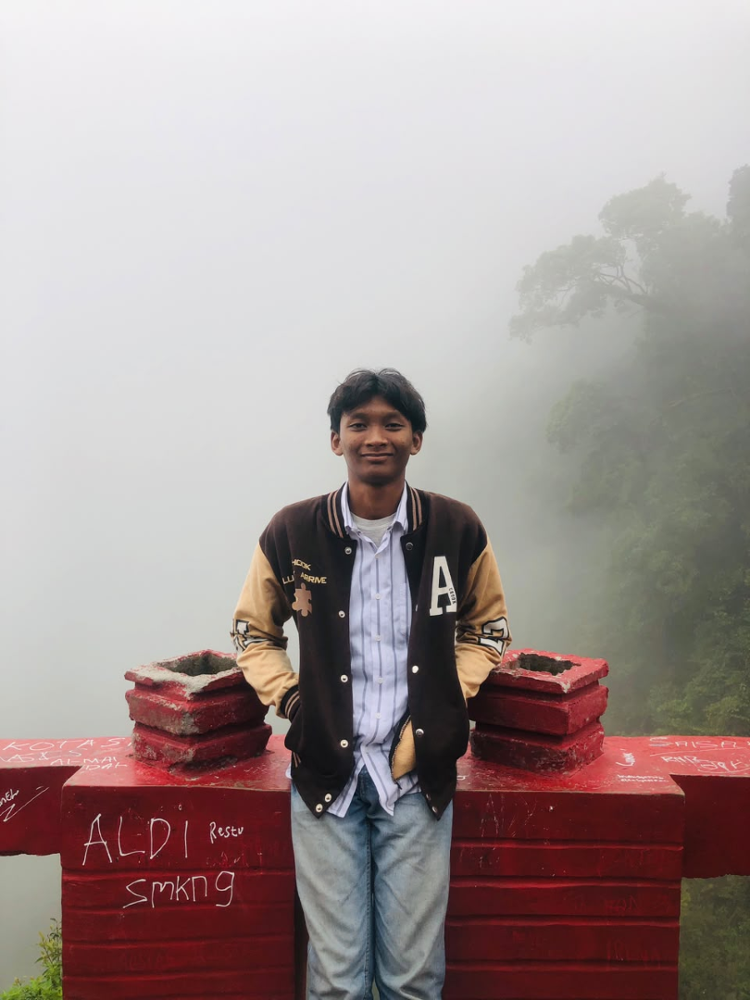

Cari daftar Gedung, Ruangan atau Civitas Akademik dengan fitur "Direktori" untuk menemukan informasi lokasi / Civitas Akademik yang anda cari.
Biro Fakultas Teknik UISU1 / 3
3D OBJEK
3D Model Viewer
Pilih Gedung atau Ruangan Fakultas Teknik yang ingin ditampilkan.
Model 3D
MEMUAT MODEL 3D...
Model 3D
Memuat informasi model...
Memuat Model 3D...
3D
Model 3D gagal dimuat
Periksa koneksi, nama file, serta decoder model.
GESERPUTARZOOMRESET
AUGMENTED REALITY
AR (Markerless)
Pilih Gedung atau Ruangan yang ingin ditampilkan menggunakan Augmented Reality.
Pilih gedung, lihat pratinjau 3D dan tentukan model Indoor atau Outdoor terlebih dahulu. Setelah siap, tekan Mulai Kamera AR.
AR Fakultas Teknik
MEMUAT MODEL AR...
Model AR
Memuat informasi model...
Memuat Model AR...
AR
Model 3D gagal dimuat
Periksa koneksi, nama file, serta decoder model.
Pilih Indoor / Outdoor di atas, kemudian buka kamera dengan model yang dipilih.
DAFTAR GEDUNG & RUANGAN
Direktori Fakultas Teknik
Pilih gedung dan ruangan untuk melihat informasi atau data Civitas Akademik.
BANTUAN
Cara Menggunakan Website
3D Objek
Pilih Gedung atau Ruangan yang ingin anda lihat.
Klik tombol "Tampilkan 3D Objek".
Sistem akan menampilkan Model 3D sesuai pilihan anda.
Untuk Biro, Perkuliahan, dan Laboratorium, Indoor dan Outdoor dapat diganti langsung. Indoor Laboratorium mempunyai pilihan Lantai 1, 2, dan 3.
Model dapat di-drag, rotate, serta diperbesar atau diperkecil menggunakan scroll mouse atau pinch pada layar.
AR Markerless
Pilih gedung dan pratinjau model. Untuk Indoor Laboratorium, pilih lantainya.
Tekan Mulai Kamera AR dan izinkan akses kamera serta sensor gerak apabila diminta.
Gerakkan kamera perlahan dan arahkan ke permukaan bertekstur dengan cahaya cukup.
Tunggu titik penempatan stabil, lalu tekan Tempatkan Model.
Gunakan satu jari untuk memutar dan dua jari untuk mengubah ukuran model.
Direktori
Pilih Gedung, Ruangan, atau Civitas Akademik.
Sistem menampilkan informasi lokasi.
Gunakan tombol Civitas Akademik untuk membuka informasi pegawai pada lokasi yang tersedia.

DEVELOPER
Muhammad Arief Rachim(Acim)
Mahasiswa Teknik Informatika FT-UISU
Website ini dibuat berdasarkan hasil dari Keresahan Developer atas minimnya akses informasi mengenai Ruangan dan Civitas Akademik yang tidak hanya dialami oleh Pengunjung, juga oleh Mahasiswa.
Proyek berbasis Skripsi berjudul "Implementasi Augmented Reality Markerless menggunakan Algoritma Simultaneous Localization and Mapping (SLAM) pada Denah Fakultas Teknik Universitas Islam Sumatera Utara" ini diharapkan menjadi solusi dari pertanyaan "Ruangan A dimana ya?" dan "Pak B dimana ya Ruangannya?".